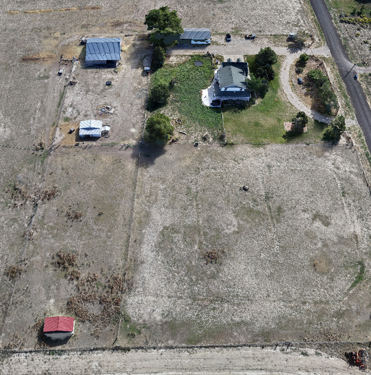
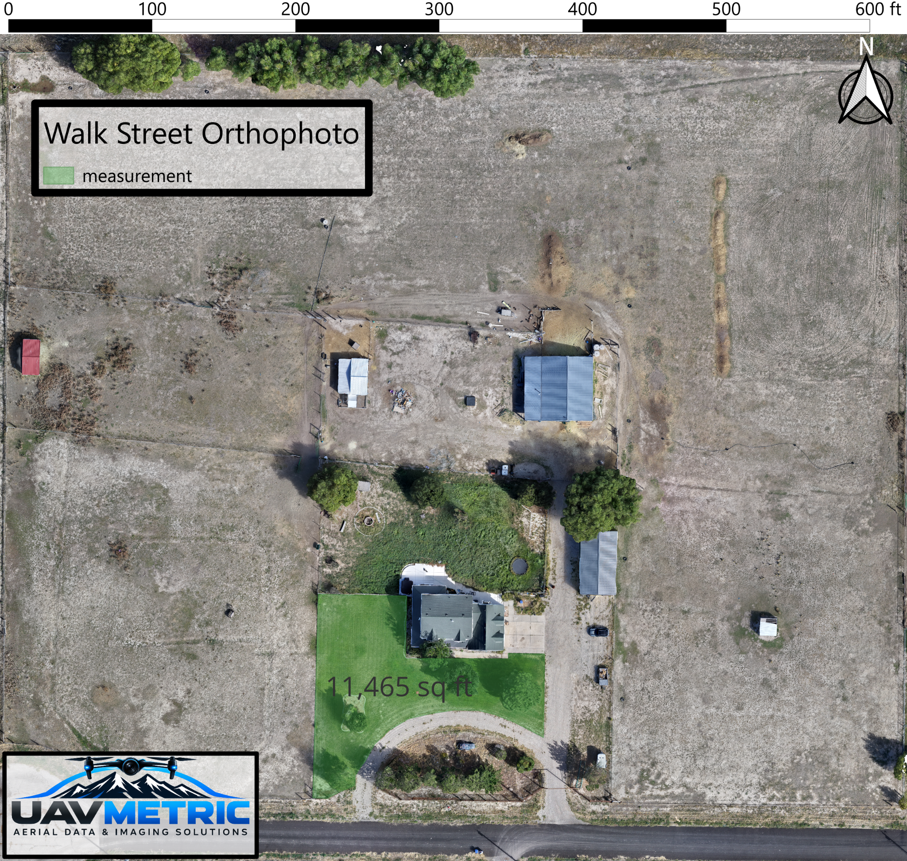
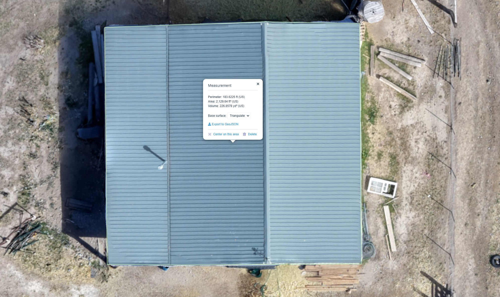
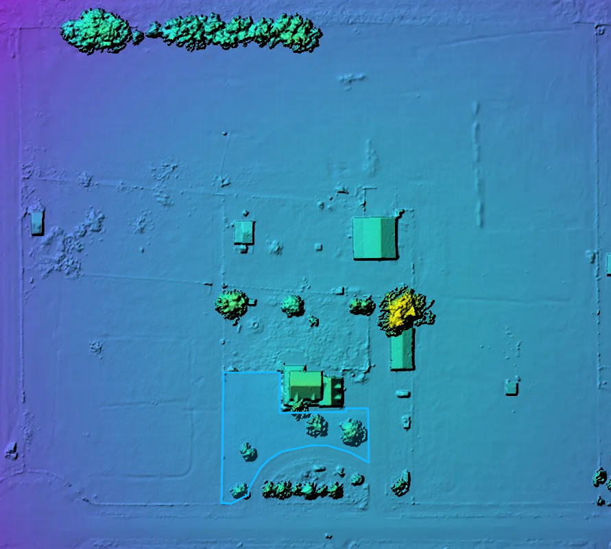
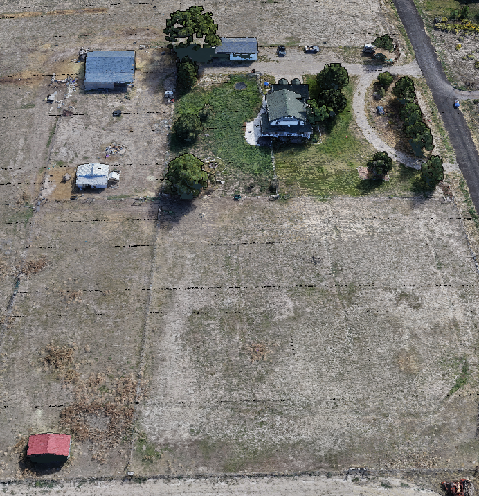

From aerial capture to usable site intelligence.
This project demonstrates how UAVMetric can turn a single site capture into a layered set of visual deliverables for documentation, measurement, analysis, and communication.

Document the site in a way that supports more than just viewing.
The goal was to create a detailed visual record that could support site understanding, measurement, and communication. Rather than stopping at aerial photography, the captured imagery was developed into multiple forms of useful site information.
The result is a progression from raw aerial perspective to mapped, measurable, and three-dimensional project context.
One clear view of the entire site.
A high-resolution orthomosaic combines multiple aerial images into a single top-down visual reference. This creates a much more useful site document than a standard aerial photograph.
- High-resolution site overview
- Consistent top-down perspective
- Scale and north reference
- Useful planning and documentation base

Turn the map into something measurable.
Once the site is mapped, clients can work directly from the visual reference to understand distances, areas, and site extents. The mapping becomes a working project tool rather than simply a picture.
- Area and perimeter measurement
- Property-scale context
- Clear visual record of what was measured
- Useful support for planning and communication

Zoom from the entire property down to specific features.
Detailed mapping allows individual structures and features to be viewed and measured while still retaining the larger site context.
- Structure-level measurement
- Roof and feature detail
- Visual confirmation of measured areas
- Better project communication

See site conditions that standard imagery does not show clearly.
Elevation visualization adds another layer of site understanding by helping distinguish relative height across terrain, structures, and vegetation.
- Relative elevation visualization
- Terrain and structure context
- Easy-to-read site interpretation
- Supports technical communication

Use colorized data to make patterns easier to understand.
Surface analysis can communicate site variation in a way that is faster to interpret than photography alone. This gives stakeholders another perspective on site conditions.
- Colorized surface visualization
- Clear presentation of site variation
- Useful for reports and discussions
- Complements the orthomosaic and elevation data

Understand the property from a more intuitive perspective.
A reconstructed 3D site view brings together structures, terrain, access, and surrounding context in a format that is easier to explore and communicate.
- Three-dimensional site context
- Structure and terrain visualization
- Useful stakeholder presentation tool
- Completes the 2D-to-3D project story

One flight. Multiple ways to understand the site.
The Walk Street project shows the value of moving beyond standard aerial imagery. A single capture workflow can support mapping, measurement, terrain visualization, surface analysis, and three-dimensional context—all organized around the needs of the project.
Tell us what you need to understand about the site.
UAVMetric can build the capture and deliverable workflow around your actual project goals.